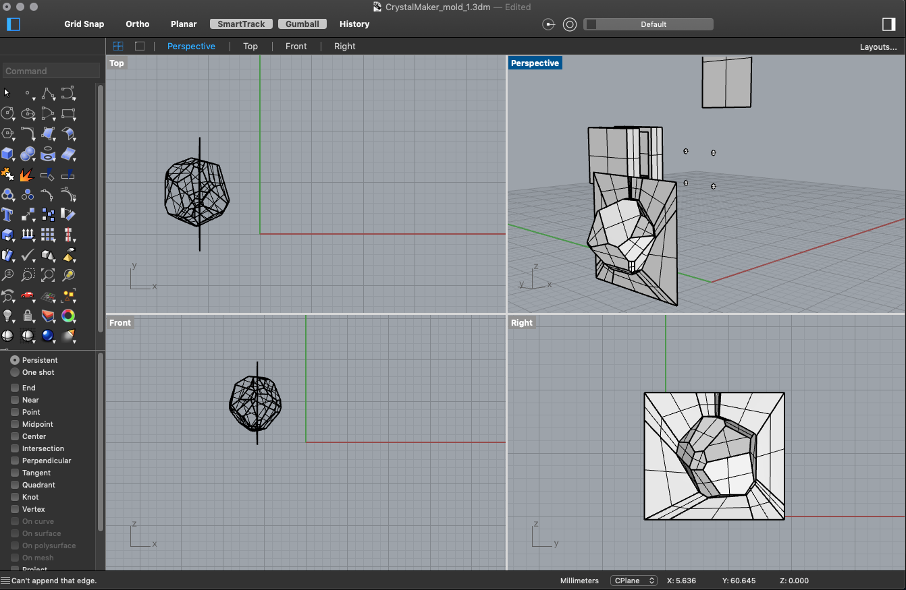
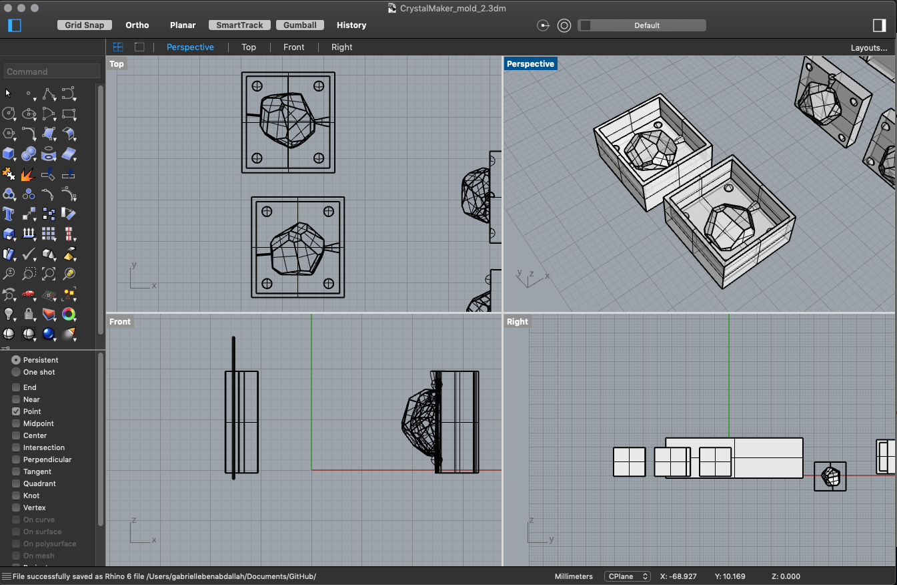
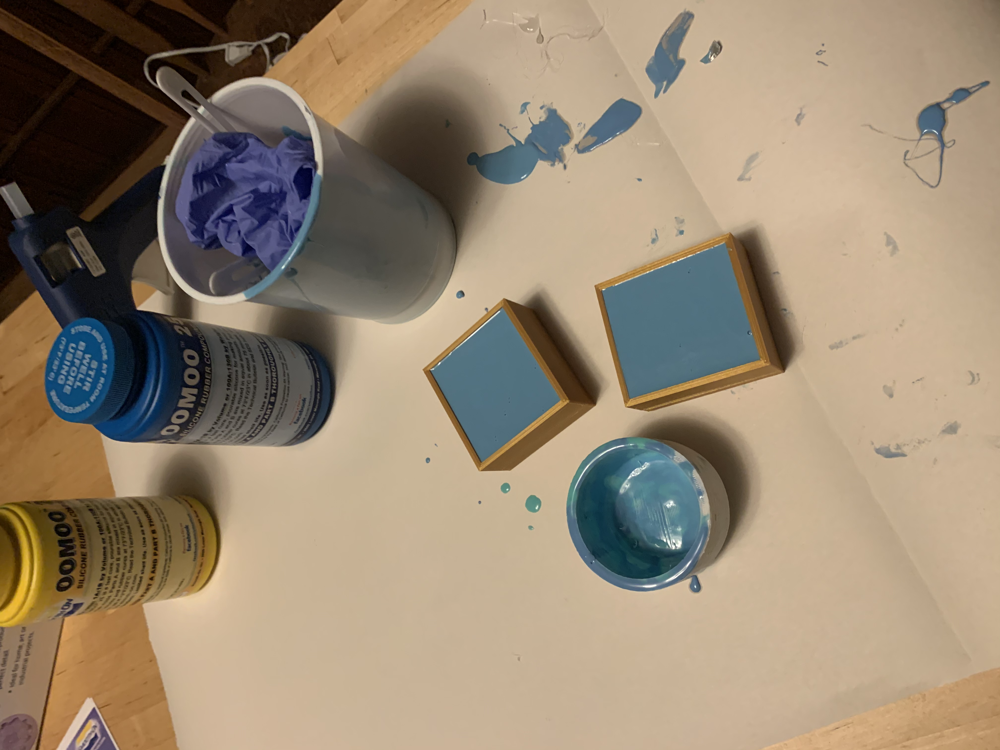

Gabrielle's Assignment 6
Part I: Making a silicon mold

I made a crystal shaped silicon mold with OOMOO 25!

I used a Grasshopper definition to make the crystal, made the positives and their box in Rhino and then printed them.
Rhino file



Once they were printed, I poured the OOMOO 25 in the boxes.
A few hours later, they were ready for demoulding!
Ready to make candles!
Part II: Making candles
Prepare your wick and gather your beeswax.
Melt your wax.
Oops, the whole is too small... the wax can't go in.
Make a bigger hole (try to be more delicate than me).
Pour again!
You have your first candle! Now repeat!
You now have four crystal candles!